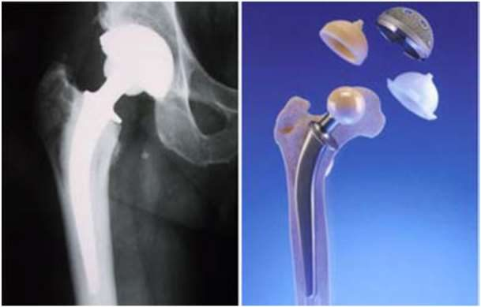

Classes de biomatériaux et métaux implantables
Une prothèse de hanche doit frotter sans s'user, porter le poids du corps à chaque pas, et cohabiter avec l'os pendant des années. Aucun matériau ne fait tout cela à la fois. Alors on en combine plusieurs. Lesquels, et pourquoi commence-t-on par les métaux ?
Les matériaux à vocation de biomatériaux forment quatre grandes catégories :
| Catégorie | Exemples du cours |
|---|---|
| métaux et alliages métalliques | aciers, chrome, cobalt, NiTi |
| céramiques | alumine, zircone, phosphates tricalciques, verres |
| polymères | Téflon, polyéthylènes, polyuréthanes, silicones |
| matériaux d'origine naturelle | collagène, corail, nacre, os modifiés |
Le cours propose aussi un classement plus détaillé :
- Métalliques.
- Inorganiques non métalliques.
- Polymères synthétiques.
- Composites biomédicaux.
- Origine biologique.
- Nano-biomatériaux.
- Céramiques.
Pourquoi des métaux
Ce sont en quelque sorte les « ancêtres » des biomatériaux : les premiers utilisés pour faire des implants. Les métaux des implants sont en fait des alliages : combinaison de plusieurs constituants, deux au minimum, dont un au moins est métallique. La liaison métallique est l'attraction électrostatique forte entre les cations métalliques et les électrons délocalisés (voir chapitre 4) ; elle donne l'arrangement compact des atomes, d'où la grande densité et la température de fusion élevée de la plupart des métaux.
Par rapport aux céramiques et aux polymères, les biomatériaux métalliques peuvent supporter des contraintes élevées, et aussi cycliques. Ceux qui résistent assez à la fatigue en flexion servent de substituts passifs des tissus durs (prothèses totales de hanche et de genou), d'aides à la guérison des fractures (plaques, vis), de dispositifs de fixation vertébrale, d'implants dentaires. Certains ont un rôle plus actif : endoprothèses vasculaires, guides de cathéter, arcs orthodontiques.
Les problèmes mal résolus
- corrosion électrochimique et durabilité ;
- dégradation non électrochimique, dont les interactions protéine / métal ;
- réactions immunitaires et d'hypersensibilité ;
- adaptation des propriétés mécaniques ;
- frottements et débris.
Fe, Cr, Co, Ni, Ti, Ta, Nb, Mo, W, largement utilisés dans les alliages d'implants, ne sont tolérés par le corps qu'en petites quantités. Or un implant peut se corroder in vivo : il s'affaiblit mécaniquement, et ses produits de corrosion nuisent aux tissus et aux organes voisins.
Relargage : un implant métallique libère des ions par dissolution, d'autant plus qu'il se corrode. Les ions dissous forment des complexes métallo-protéiques qui empêchent le transport des nutriments et entraînent la lyse des cellules voisines, avec dégradation de la matrice extracellulaire. Cela peut aboutir au descellement de l'implant : la prothèse n'a plus un contact optimal avec l'os, sa fixation est défaillante. La rate accumule Cr, Co, Ti, Ni, Fe et Al ; les poumons et les reins accumulent Co et Ni.
Hypersensibilité aux métaux : environ 10 à 15 % de la population présente une hypersensibilité cutanée aux métaux. Le nickel est le plus allergène, suivi du chrome et du cobalt. On estime que 20 à 25 % des patients présentent une sensibilité aux métaux après arthroplastie, mais peu développent des symptômes. Les implants en titane sont considérés comme hypoallergéniques.
Corrosion galvanique : quand deux métaux humides sont en contact, l'un des deux se corrode plus vite que s'ils étaient séparés.

Exemple de calcul
Exemple ajouté. Sur une consultation de 200 patients avant une prothèse, la fourchette du cours (10 à 15 %) donne entre \(0{,}10 \times 200 = 20\) et \(0{,}15 \times 200 = 30\) patients avec une hypersensibilité cutanée aux métaux. Pour eux, on évite les alliages riches en nickel, chrome ou cobalt, et on pense au titane, hypoallergénique.
À retenir
Quatre catégories :
- Métaux et alliages.
- Céramiques.
- Polymères.
- Matériaux naturels.
Métaux :
- Les premiers implants.
- Des alliages.
- Contraintes élevées et cycliques (fatigue).
Problèmes : corrosion, relargage d'ions (jusqu'au descellement), hypersensibilité (Ni, puis Cr, puis Co ; 10 à 15 % de la population), usure et débris, corrosion galvanique entre deux métaux en contact.